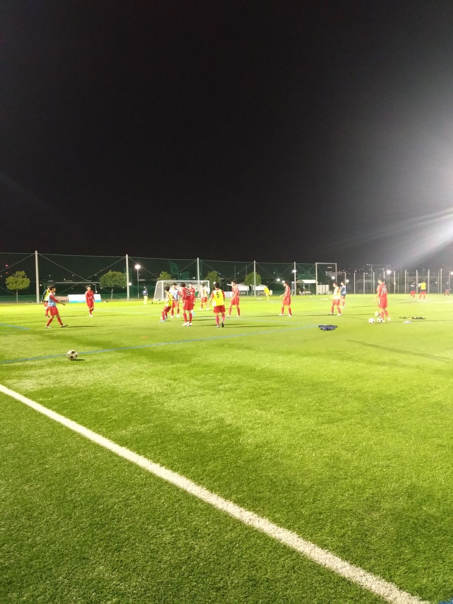
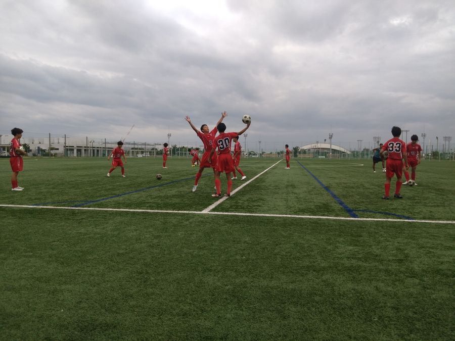
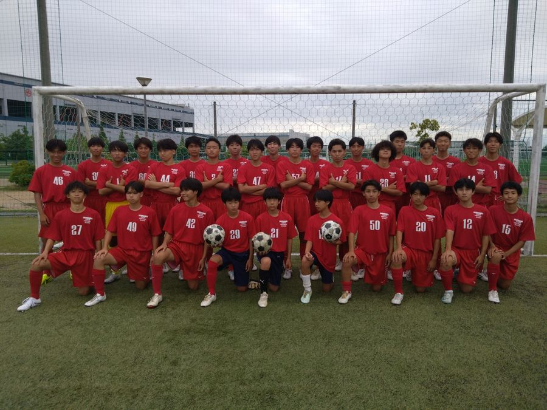
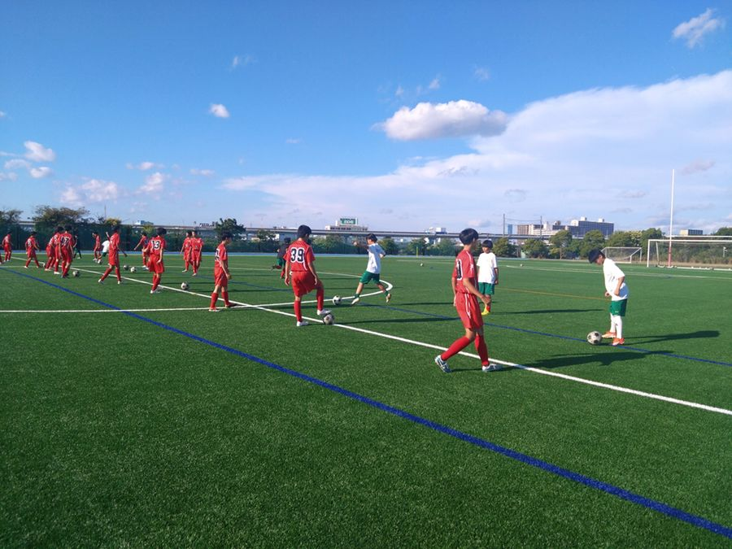

POINT
協調性やコミュニケーション能力を身につけられるサッカー育成で、楽しく成長しよう！
01
部活と両立できる
平日夕方の練習だから、部活のあとでも通いやすい。部活動の地域移行にも対応した、新しいかたちのスクールです。
02
専門指導員のコーチング
サッカー専門指導員が、一人ひとりのレベルに合わせて「楽しさ」と「上達」の両方を引き出します。
03
土日の特別プログラム
合同チーム（中体連）活動、SENYO F.C.トレーニング、泉陽高校サッカー部の活動参加など、実戦の場も用意しています。
GALLERY
練習の様子



INFO
スケジュール・会費
- 対象
- 堺区の中学生
- 練習日
- 火曜 16:45〜18:30
水曜 16:20〜18:20
金曜 16:45〜18:30
土日 月2〜3回（特別プログラム） - 場所
- J-GREEN堺／泉陽高校内
- 年会費
- 2,500円
- 月謝
- 2,000円
- その他
- 遠征費など別途必要な場合があります。
無料体験会 受付中 最新の体験会日程は、LINE公式アカウントでご案内しています。
詳しい内容・体験申込は
LINE公式アカウントへ
SENYO F.C. のLINE公式アカウントで、体験会の日程をご案内しています。
QRコードから友だち追加
反応しない場合は LINE ID「@419ggvnf」で検索してください
ウマクスクールのお申し込みフォームからもご相談いただけます。